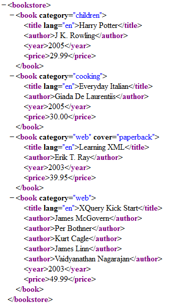
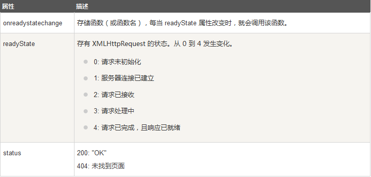
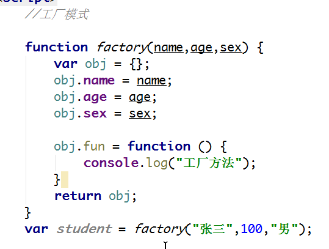

一、AJAX
（一）什么是AJAX
AJAX = Asynchronous JavaScript and XML（异步的 JavaScript 和 XML）。
AJAX 不是新的编程语言，而是一种使用现有标准的新方法。
AJAX 最大的优点是在不重新加载整个页面的情况下，可以与服务器交换数据并更新部分网页内容。
AJAX 不需要任何浏览器插件，但需要用户允许JavaScript在浏览器上执行。
（二）简介
AJAX 是一种用于创建快速动态网页的技术。
通过在后台与服务器进行少量数据交换，AJAX 可以使网页实现异步更新。这意味着可以在不重新加载整个网页的情况下，对网页的某部分进行更新。
传统的网页（不使用 AJAX）如果需要更新内容，必需重载整个网页面。
使用 AJAX 的应用程序案例：新浪微博、Google 地图等等。
（三）相关知识
AJAX是基于现有的Internet标准，并且联合使用它们：
1.XMLHttpRequest 对象 (异步的与服务器交换数据)
2.JavaScript/DOM (信息显示/交互)
3.CSS (给数据定义样式)
4.XML (作为转换数据的格式,不唯一,可用多种文件格式JSON,HTML,TXT,JS等)
（四）核心代码
var xhr;
if(window.XMLHttpRequest){
xhr=new XMLHttpRequest();
}else{
xhr=new ActiveXObject("Microsoft.XMLHTTP");
//兼容老版本Internet Explorer （IE5 和 IE6）使用 ActiveX 对象：
}
xhr.onreadystatechange=function(){
if(xhr.readyState==4&&xhr.status==200){
console.log(xhr.response);
}
}
xhr.open("GET/POST","http://www.example.com/test.php",true);
//获取用GET，提交用POST
xhr.send();
（五）AJAX XHR
1.创建XMLHttpRequest对象
XMLHttpRequest 是 AJAX 的基础。
所有现代浏览器均支持 XMLHttpRequest 对象（IE5 和 IE6 使用 ActiveXObject）。
XMLHttpRequest 用于在后台与服务器交换数据。这意味着可以在不重新加载整个网页的情况下，对网页的某部分进行更新。
创建XMLHttpRequest对象
variable=new XMLHttpRequest();
variable=new ActiveXObject("Microsoft.XMLHTTP");//(IE5 和 IE6)
2.发送请求
使用 XMLHttpRequest 对象的 open() 和 send() 方法
| 方法 | 描述 |
|---|
| open(method,url,async) |
method:请求的类型，GET或POST
url:文件在服务器上的位置
async:true(异步)或false(同步)
|
| send(tring) |
将请求发送到服务器
string:仅用于POST请求
|
用GET还是POST方法？
与 POST 相比，GET 更简单也更快，并且在大部分情况下都能用。
在以下情况中，请使用 POST 请求：
无法使用缓存文件（更新服务器上的文件或数据库）
向服务器发送大量数据（POST 没有数据量限制）
发送包含未知字符的用户输入时，POST 比 GET 更稳定也更可靠
一个简单的分法：获取用GET，提交用POST，但都不安全
Async = true
AJAX 指的是异步 JavaScript 和 XML（Asynchronous adj:异步的；不同时的；不同期的）。
XMLHttpRequest 对象如果要用于 AJAX 的话，其 open() 方法的 async 参数必须设置为 true
对于 web 开发人员来说，发送异步请求是一个巨大的进步。很多在服务器执行的任务都相当费时。AJAX 出现之前，这可能会引起应用程序挂起或停止。
通过 AJAX，JavaScript 无需等待服务器的响应，而是：
在等待服务器响应时执行其他脚本,
当响应就绪后对响应进行处理
3.响应
如需获得来自服务器的响应，使用 XMLHttpRequest 对象的 responseText 或 responseXML 属性。
| 属性 | 描述 |
|---|
| responseText |
获得字符串形式的响应数据 |
| responseXML |
获得XML形式的响应数据 |
如果来自服务器的响应是 XML，而且需要作为 XML 对象进行解析，请使用 responseXML 属性
xmlDoc=xmlhttp.responseXML;
txt="";
x=xmlDoc.getElementsByTagName("ARTIST");
for (i=0;i";
}
document.getElementById("myDiv").innerHTML=txt;
XML文件格式：

了解一下XML
XML可扩展标记语言，标准通用标记语言的子集，是一种用于标记电子文件使其具有结构性的标记语言。
它被设计用来传输和存储数据
它的设计宗旨是传输数据，而不是显示数据。
它的标签没有被预定义，需要自行定义标签。
它被设计为具有自我描述性。
它是W3C的推荐标准。
它和超文本标记语言语法区别：
超文本标记语言的标记不是所有的都需要成对出现，它则要求所有的标记必须成对出现；
HTML标记不区分大小写，它则大小敏感，即区分大小写。
4.onreadystatechange 事件
当请求被发送到服务器时，我们需要执行一些基于响应的任务。
每当 readyState 改变时，就会触发 onreadystatechange 事件。
readyState 属性存有 XMLHttpRequest 的状态信息。
下面是 XMLHttpRequest 对象的三个重要的属性：

在 onreadystatechange 事件中，我们规定当服务器响应已做好被处理的准备时所执行的任务。
当 readyState 等于 4 且状态status为 200 时，表示响应已就绪：
xhr.onreadystatechange=function(){
if(xhr.readyState==4&&xhr.status==200){
console.log(xhr.response);
}
}
二、JSON,HTTP状态码
（一）JSON
JSON：JavaScript 对象表示法（JavaScript Object Notation）。
JSON 是存储和交换文本信息的语法。类似 XML。
JSON 比 XML 更小、更快，更易解析。
（二）HTTP状态码
HTTP状态码：
1开头：消息，这一类型的状态码，代表请求已被接受，需要继续处理。
2开头：成功，代表请求已成功被服务器接收、理解、并接受 200：OK
3开头：重定向，这类状态码代表需要客户端采取进一步的操作才能完成请求
4开头：请求错误，客户端看起来可能发生了错误，妨碍了服务器的处理 404：请求所希望得到的资源未被在服务器上发现
5、6：服务器错误 500：服务器端源代码出现错误 505：服务器不支持请求中的HTTP版本
三、设计模式
工厂模式

Java开发常用的23种设计模式
参考阅读